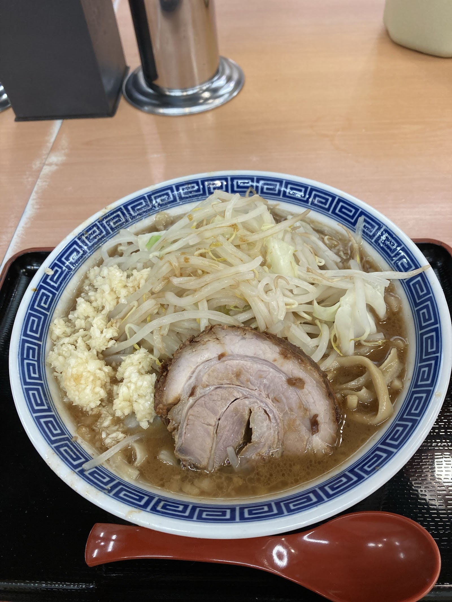

看板の「ラーメン」「まぜそば」を中心にご紹介します。
掲載メニューは代表的なジャンルのご紹介です。具体的な品目名・価格・提供時間などの詳細は、店舗または公式Instagram（@seiryu_ken_ramen）にてご確認ください。

Photo: 茶虎猫（Google マップ）
自家製麺と、切り立ての厚切りチャーシューを合わせた、当店の看板メニューです。麺・チャーシューとも、看板に掲げられている通りのこだわりを持ってご提供しています。
汁なしでお楽しみいただける、まぜそばもご用意しています。看板にも掲げられている、ラーメンと並ぶもうひとつのジャンルです。
当店の正式なカスタムメニューについては確認できておりませんが、ご来店されたお客様のクチコミには、ニンニクやヤサイ、アブラなどを増量できた、全マシにしたという声が寄せられています。これはあくまでクチコミからうかがえる情報であり、当店が公式にご案内している内容ではありません。同様のご希望がある場合は、ご来店時に店舗スタッフへ直接お尋ねいただくか、事前にInstagramでご確認いただくと安心です。
お食事にあわせてお楽しみいただけるドリンクもご用意しています。品目の詳細は店舗にてご確認ください。